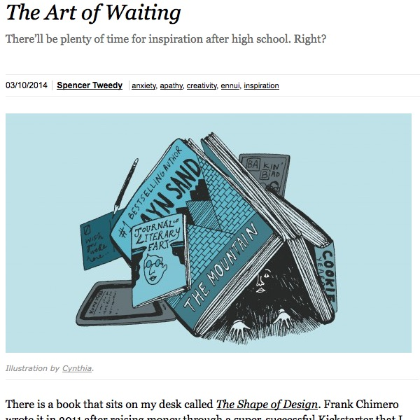

The Art of Waiting

I really liked this essay. I feel like we all can too easily get into the funk of not. Of waiting. Of not yet.
That’s why ... any other restrictive circumstance can be dangerous: They make dreams too painful to bear. To avoid longing, we hunker down, wait, and resolve to just survive. Great art becomes a reminder of the art you want to be making, and of the gigantic world outside of your small, seemingly inescapable one. We hide from great things because they inspire us, and in this state, inspiration hurts.
And yes, I did the simple math to figure out how young the author was/is. Despite his age, there's some solid insight here.